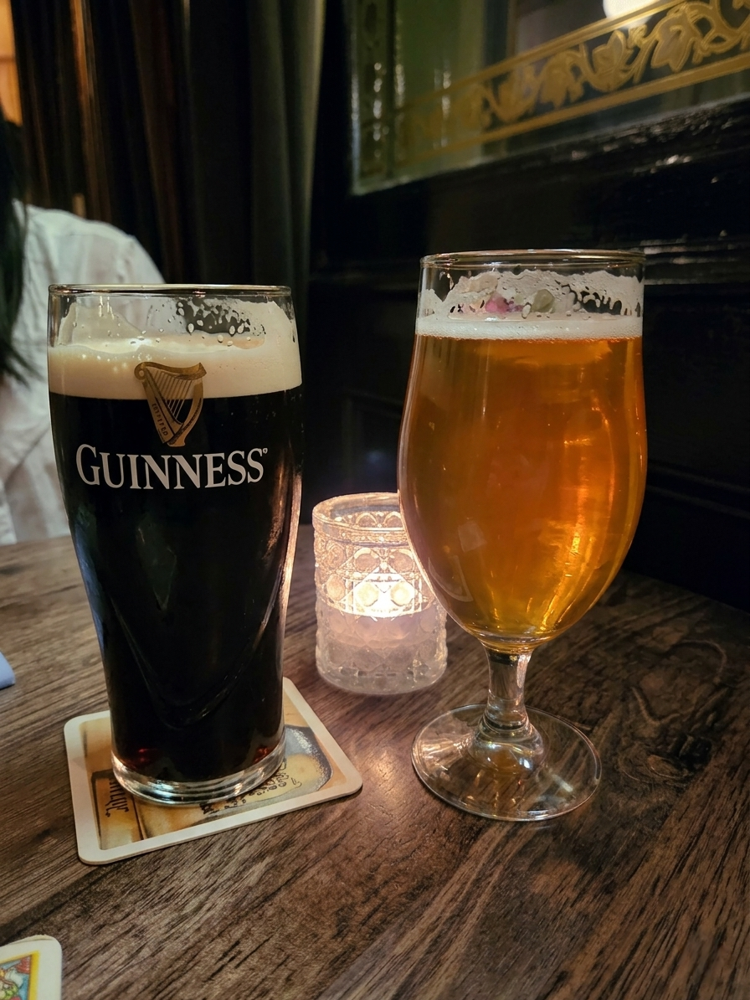
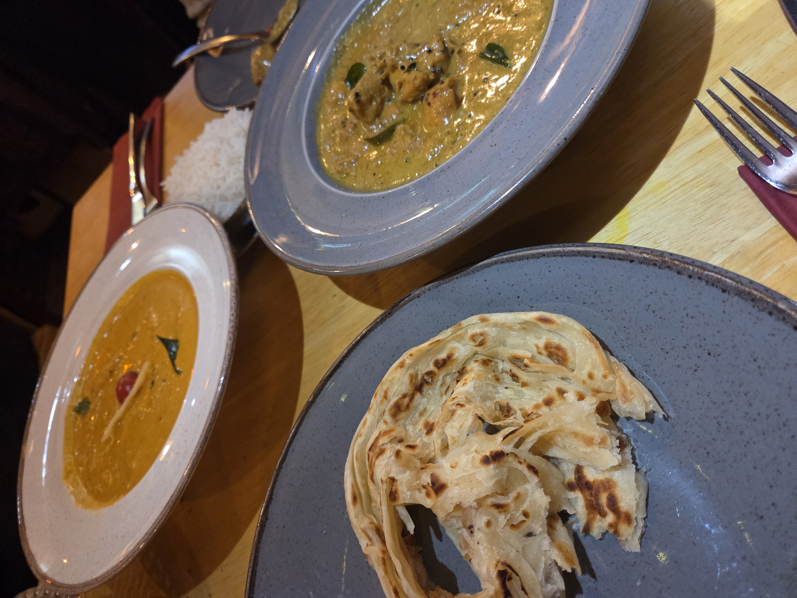
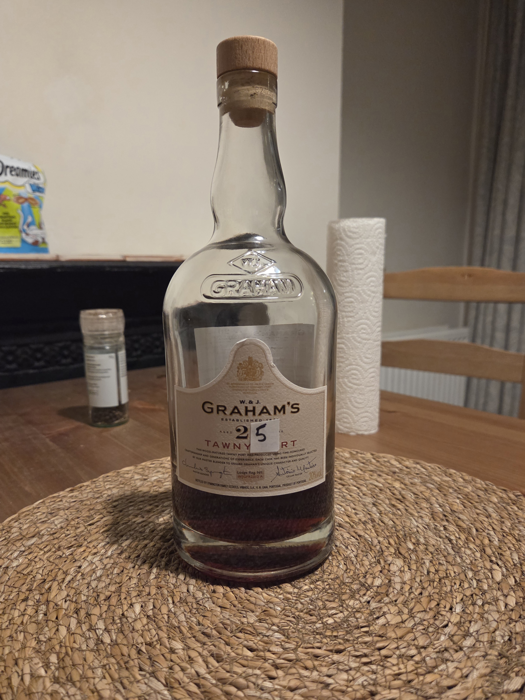
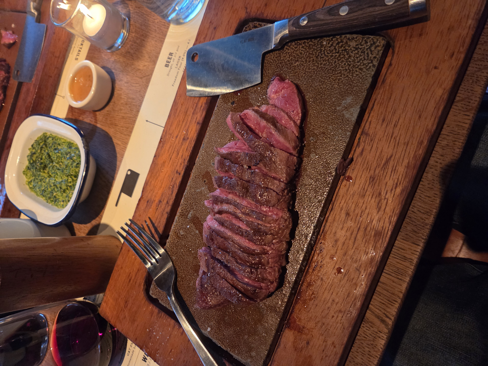
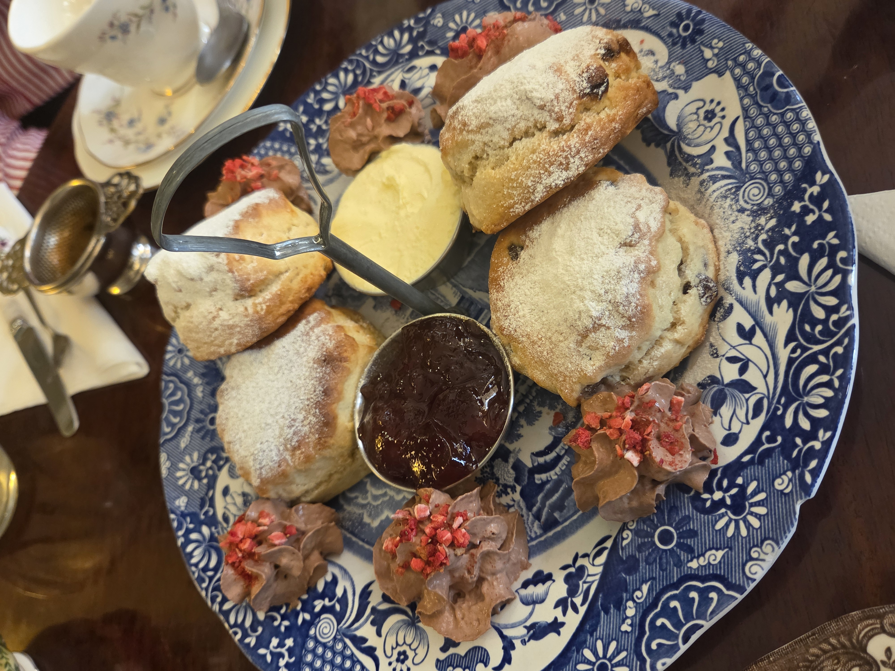
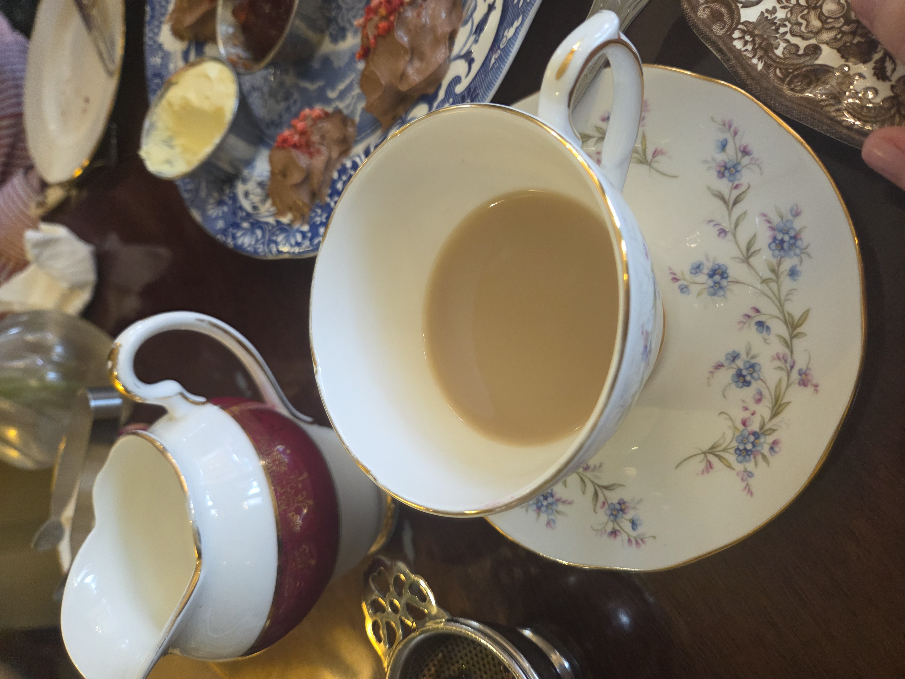
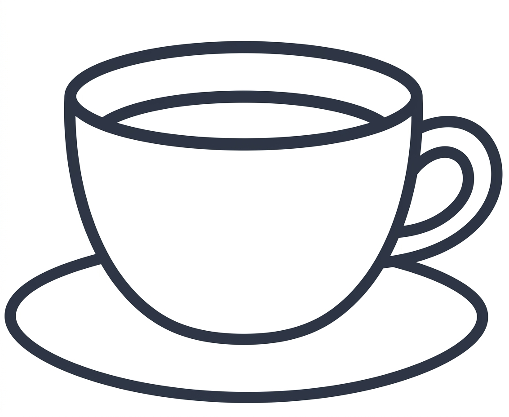
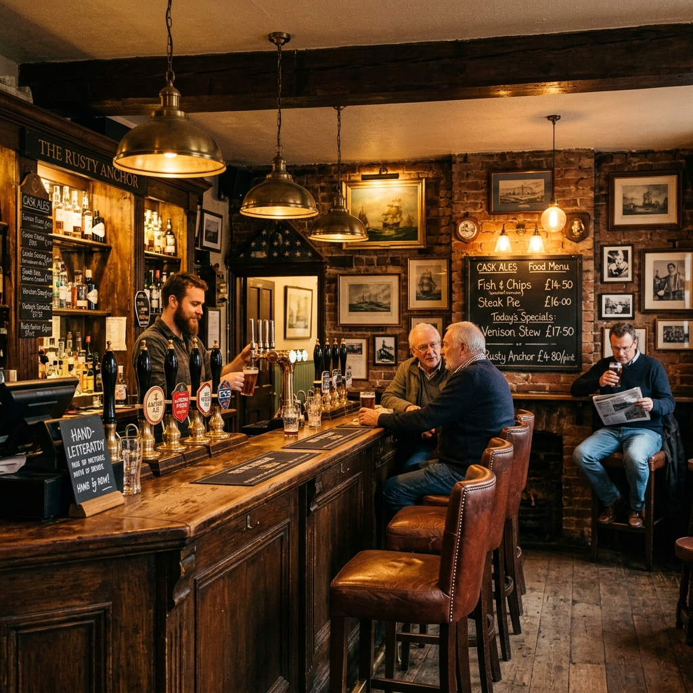
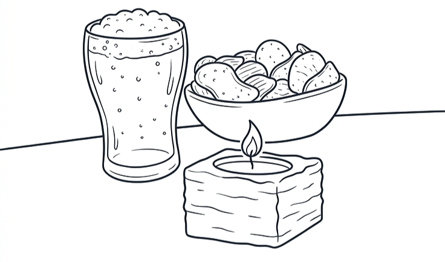

United Kingdom

LONDON · ROYAL LEAMINGTON SPA · OXFORD
맛없다는 편견 속 나만의 미식 보물 찾기
MUST EAT 이건 꼭 먹어야 해!
Draught Beer

Pub의 나라답게 1일 1맥주는 기본!
• Guinness: 부드럽고 묵직한 흑맥주• Ale: 향과 풍미를 즐기는 영국식 맥주
Indian Food

영국은 인도계 이민자 인구가 많아
인도 음식 문화가 발달했으며,
현지 못지않은 수준의 인도 요리를
즐길 수 있는 곳으로 유명
인도 음식 문화가 발달했으며,
현지 못지않은 수준의 인도 요리를
즐길 수 있는 곳으로 유명
Port Wine

- 영국과 프랑스의 갈등으로 포르투갈 와인이
대중화되며 탄생
- 진하고 달콤하면서도 도수가 높은
주정 강화 와인*
- 개봉 후에도 비교적 오래 보관 가능
대중화되며 탄생
- 진하고 달콤하면서도 도수가 높은
주정 강화 와인*
- 개봉 후에도 비교적 오래 보관 가능
Flat Iron Victoria

- 물가 비싼 런던에서 즐기기 좋은 가성비
스테이크 맛집
- 고소한 육즙의 스테이크와 식후 제공되는
아이스크림이 별미
- 뮤지컬 극장 근처라 공연 관람 전후
동선으로 추천
스테이크 맛집
- 고소한 육즙의 스테이크와 식후 제공되는
아이스크림이 별미
- 뮤지컬 극장 근처라 공연 관람 전후
동선으로 추천
TIP
:
구글 지도에 레스토랑 온라인 메뉴가
잘 올라와 있으니 적극 활용해 보세요
영수증에 Service Charge가 자동 포함되니
추가 팁은 따로 내지 않아도 돼요
식사 중 기본 식수로 수돗물(Tap water)
무료 요청이 가능해요
EXPERIENCE 직접 느껴본 영국의 문화들


Tea Culture

언제 어디서나 하루 종일 차를
달고 사는 영국인들의 일상
- 갓 구운 스콘에 클로티드 크림과달고 사는 영국인들의 일상
딸기잼을 얹은 '크림티' 체험
- 다양한 티 푸드가 함께 나오는
'애프터눈 티 세트'로 화려하게
즐기기 가능
- 티 숍에서 선물용이나 기념품으로
구매하는 것을 추천


Pub Culture
어느 동네에서나
등장하는 영국의 펍
- 야외 스탠딩 선호로 외부가등장하는 영국의 펍
붐벼도 실내는 비교적 한산함
- 술만 판매하며 카운터에서 직접
주문·픽업하는 펍도 다수
- 대부분 밤 10~11시쯤에 일찍
종료
CHALLENGE 용기 있는 자만 도전하라!
Jellied Eels
- 삶은 장어를 식혀 젤리처럼 굳혀낸 영국 요리
- 런던 동부 이스트엔드 지역에서 유래된 전통 음식
- 독특한 비주얼과 특유의 미끌거리는 식감으로 유명
- 현지에서도 호불호가 매우 강하게 갈리는 음식
- 런던 동부 이스트엔드 지역에서 유래된 전통 음식
- 독특한 비주얼과 특유의 미끌거리는 식감으로 유명
- 현지에서도 호불호가 매우 강하게 갈리는 음식
후기: 한 번 경험한 걸로 만족, 두 번은 없을 맛..^^
CAUTION